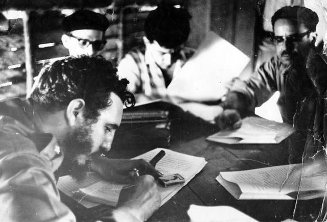

Reforma Agrária Cubana
Balanço da reforma agrária pós-revolução
Conforme já vislumbramos, a reforma agrária em Cuba foi estratégica para a dissolução da herança colonial, seu processo de desenvolvimento visou romper com as relações imperialistas que promoviam o atraso e subdesenvolvimento crônico da ilha. Com o objetivo principal de distribuir a terra, dividir as propriedades de forma mais justa, o legado da reforma agrária foi beneficiar o campesinato pobre e aquele que não possuía terra, que passará a ter maior independência e condições de existência através do acesso ao trabalho digno. A derrota do Tiempo Muerto marca profundamente o grau de importância da conquista alcançada pelo processo revolucionário. Foram distribuídas cerca de 2 caballerias de terra para cada família camponesa, o chamado mínimo vital. Nessas propriedades os trabalhadores podiam plantar para sua subsistência, contudo, o baixo excedente privado, em função da condição técnica inicialmente precária, leva a revolução a outras formas de organização produtiva, visando restabelecer os níveis de produtividade necessários ao desenvolvimento da ilha. Não foram poucas as ocasiões em que o campesinato foi pressionado por essa estratégia organizativa centrada no Estado, até mesmo porque uma parte dos intelectuais da revolução reconheciam que:
As reformas agrárias burguesas tiveram sempre como objetivo dividir os grandes latifúndios em pequenas propriedades de camponeses. Ideias mais radicais, pelo menos a partir de Marx, rejeitam essa solução com o duplo argumento de que a agricultura em pequena escala, feita pelos camponeses, é insoluvelmente ineficiente e constitui inevitavelmente uma força contra revolucionária (Huberman E Sweezy,1960, p. 145).
O regime de distribuição de 2 caballerias já estava contido na lei n° 3 da Sierra Maestra, pode-se dizer que a base social camponesa do movimento 26 de Julho pressionou fortemente o processo político da revolução desde muito cedo, visando obter uma pequena quantidade de terra fértil, que poderia ser ocupada de forma sustentável por uma família de até 5 pessoas. Essa distribuição foi administrativamente garantida pelo INRA como uma medida razoável para as famílias cultivarem seus próprios alimentos. O mínimo vital viria a ser distribuído para todos os “arrendatários, subarrendatários, parceiros e pecuaristas que cultivassem menos de 2 caballerias, bem como os proprietários que possuíam parcelas menores que 2 caballerias” (Vasconcelos, 2016, p.212). Além do mais,todos os arrendatários, subarrendatários, parceiros e pecuaristas que cultivassem entre 2 e 5 caballerias, receberiam gratuitamente 2 caballerias podendo adquirir mais 3 caballerias mediante a venda forçada ao Estado (idem, 2016, p.112). temos um quadro que sintetiza a estrutura fundiária da ilha após as duas leis da reforma agrária:
| Primeira Lei (dez/1962) | Segunda Lei (dez/1963) | |||
|---|---|---|---|---|
| Setor | Área | % | Área | % |
| Setor Estatal | 29.834 | 44 | 410.856 | 60,1 |
| Setor Privado | 385.529 | 56 | 265.506 | 39,3 |
| Menores de 5 caballerias | 248.211 | 36 | 265.499 | 39,3 |
| Maiores de 5 caballerias | 138.822 | 20 | 0,0 | 0,0 |
| Fonte: Gutelman, 1975, p.88. Apoud: Vasconcelos, 2016, p.190. | ||||
Após as duas reformas agrárias percebe-se o melhoramento da condição de vida, que se eleva em um patamar histórico inédito, que nitidamente tirou aqueles trabalhadores da entressafra do período do Tiempo Muerto da miséria. As crianças que antes não possuíam nenhuma condição para ir à escola ou simplesmente desistiam por conta da situação de miséria, conseguem terminar seus estudos de forma adequada. Diversas são as conquistas sociais, abaixo podemos comparar os quadros sociais antes e depois da revolução:
Antes de 1959:
- 85% dos pequenos agricultores estavam pagando aluguel e viviam sob a ameaça perene de desapropriação de seus lotes.
- 85% das casas dos camponeses não tinham água corrente.
- 90% dos lares de camponeses não tinham eletricidade.
- 8% e menos da população rural recebia atendimento médico gratuito.
- 45% das crianças de seis a 14 anos não frequentavam a escola. Nas escolas públicas de cada cem crianças que se inscreveram apenas seis atingiram a sexta série.
Depois de 1959:
- 150 mil famílias tornaram-se proprietárias com a Reforma Agrária, proclamada por Fidel em 17 de maio de 1959
- 100% da população cubana tem eletricidade nos lares em 2018.
- 74,4% da população cubana tem acesso à água do aqueduto, segundo o Censo Demográfico e Habitacional de 2012.
- 1 médico para cada 122 habitantes é o número atual e o atendimento médico é gratuito e um direito protegido pela Constituição.
- A educação em Cuba hoje é gratuita e obrigatória até a nona série.
debate em ação:
As críticas à organização agrária cubana, oriundas de Chonchol, conforme citamos anteriormente, se inseriram no processo de um “pequeno” e posteriormente “grande” debate econômico em torno do papel a ser desempenhado pelas cooperativas agrícolas e as granjas estatais. Nas propriedades do Estado, que contavam com trabalhadores assalariados, o “pequeno debate” se caracterizava pela disputa entre a propriedade privada coletiva (cooperativas) e a propriedade estatal como os modelos a serem implementados. Em 1961 o pequeno debate colocou em conflito dirigentes cubanos e especialistas estrangeiros (defensores da revolução). O grupo estrangeiro defendia um maior protagonismo e independência das unidades cooperativas no campo, o grupo de líderes estatais se inclinava mais à defesa das grandes unidades produtivas do Estado. O centro dos esforços girava em torno da busca melhor forma de controlar o excedente e aumentar a produtividade agrícola. Che Guevara, que fazia parte do grupo dos estrangeiros em Cuba, apesar de sua condição, optou pelo grupo que fez a crítica do chamado cálculo econômico[1], grupo capitaneado pelos membros do partido mais próximos a Fidel, foi esse grupo que afinal obteve a vitória, concretizando o intuito de abolição absoluta do mercado:
Parte da ideia de abolir os incentivos materiais e o mercado era que as pessoas não deveriam precisar de dinheiro par ter acesso a bens e serviços. A economia privada foi praticamente eliminada. As reformas agrárias de 1959 e 1963 aboliram todas as fazendas particulares com mais de 5 caballerias. (AVIVA CHOMSKY, 2015, p.65).
A proposta de Che e seus partidários era a de promover a participação máxima dos trabalhadores e ao mesmo tempo introduzir mecanismos de redução dos custos de produção, liberando recursos para amplos programas de educação, saúde e direitos sociais. O grande debate, como ficou conhecido, despontou em 1963, o sistema orçamentário cubano unificado é defendido por Che e seus adeptos, contra Carlos Rafael Rodrigues, que era partidário do cálculo econômico. Dessa vez o sistema orçamentário defendido por Che Guevara não teve sucesso como no pequeno debate, Carlos Rafael Rodrigues apresentou críticas ao sistema orçamentário cubano, o sistema orçamentário era completamente estatal, ou seja, tudo era de controle unicamente do Estado desde o início da produção agrícola até a distribuição de terras:
A centralização engendra sérios vícios perigosos. O centralismo burocrático é o pior deles. O método de traçar diretrizes gerais sem levar em conta as peculiaridades especificas de cada localidade conduz a agricultura a graves erros. Se a isso se soma a rigidez centralista, que exige que cada decisão local dos administradores tenham uma esfera de competencia dentro da qual possam atuar por sua propria responsabilidade, tende-se à formação sistemática de ‘gargalos’, ao estancamento dos problemas e ao desespero dos trabalhadores da base (…), se criam títeres administrativos carentes de capacidades resolutivas, incapazes de abordar seriamente os ploblemas que tem diante de si e desprovidos de todo movimento que não seja gerado pelos fios administrativos que os conectam ao aparato central. Se em todos os rincões da produção estes vícios do centralismo são nefastos, na agricultura se fazem mortais. A Indústria carrega consigo certo grau de mecanização produtiva; a agricultura exige soluções cambiantes, de més em més, de dia em dia, e às vezes de hora em hora. Nenhum regulamento pode substituir a iniciativa consciente e técnica derivada da análise e das experiências locais. Por isso, também, este ano de estudo das condições de desenvolvimento de nossa agricultura levou os dirigentes do INRA à conclusão de que era imperativo eliminar as Administrações Gerais que dirigiam as granjas desde Havana, fossem Granjas do Povo ou Granjas Canavieiras, para substitui-las por uma descentralização, na qual as granjas se agrupem por uma base regional (1963b, p. 81-82. Apoud: Vasconcelos, 2016, p.222).
O centralismo burocrático, assim como expõe Carlos Rafael, era também uma crítica já presente em Chonchol, as granjas estatais, assim como nesse modelo, eram extremamente grandes, com isso a administração gerava sérios problemas por sua complexidade. Além do mais, Cuba sofre com a falta de mão de obra de profissionais qualificados. Com base nesses conflitos, o sistema orçamentário de Che Guevara foi vencido pelo grupo de Rodrigues, como sendo um modelo mais justo. Após Cuba se declarar oficialmente socialista em abril de 1961, e as relações com a União Soviética se fortalecerem, o país passa por um período de desequilíbrio na economia por conta do grande aumento populacional nas cidades, tal como do consumo das massas, antes inexpressivo devido a miséria. Todos os produtos passam por racionamento, ou seja, cada família teve uma quantidade limite de produtos mensalmente disponíveis:
| Produto | Quantidade per capita por mês | Preço a pagar pela cota |
|---|---|---|
| Manteiga | 500 gramas | Cr$ 2,16 |
| Sabão/detergente | 3,5 quilos | Cr$ 2,70 |
| Caldo de carne e galinha, concentrado, para crianças | 7 tabletes | Cr$ 1,40 |
| Arroz | 3 quilos | Cr$ 7,80 |
| Massa de tomate | 1,5 quilo por família de até 7 pessoas | Cr$ 2,70 |
| Feijão | 700 gramas | Cr$ 1,62 |
| Açúcar | 1,5 quilo | Cr$ 0,50 |
| Sal | 500 gramas | Cr$ 0,30 |
| Sabonete | 1,5 unidade por pessoa | Cr$ 1,30 |
| Pasta dental | 4 por grupo de 15 pessoas | Cr$ 6,00 |
| Carne de boi (preço médio) | 350 gramas | Cr$ 5,00 |
| Carne de porco | 350 gramas | Cr$ 5,00 |
| Carne congelada prensada | 700 gramas | Cr$ 5,40 |
| Salame | 480 gramas | Cr$ 5,40 |
| Salsichão | 480 gramas | Cr$ 5,40 |
| Costela salgada | 420 gramas | Cr$ 5,00 |
| Toucinho | 350 gramas | Cr$ 5,00 |
| Presuntada em lata | 350 gramas | Cr$ 4,50 |
| Presunto cozido | 300 gramas | Cr$ 5,20 |
| Presunto cru | 240 gramas | Cr$ 9,45 |
| Patê | 3 latinhas | Cr$ 9,45 |
| Lombo defumado | 270 gramas | Cr$ 4,60 |
| Fonte: Fernando Morais; 2001, p.69-70. | ||
Um dos maiores símbolos do atraso e subdesenvolvimento cubano foi aquilo que ficou conhecido como tiempo muerto, conforme já citamos. Segundo Joana Salém Vasconcelos entre 1953 e 1963, a vida daqueles trabalhadores que sofriam com o desemprego no período da entressafra, a partir do mínimo vital, que correspondia ao todo de 2 a 5 caballerias e “da política estatal de incentivos ao campesinato para o aumento da produtividade, por meios de créditos, insumos e preços favoráveis” (Vasconcelos, 2016, p.239) pôs fim ao desemprego estrutural cubano. Essa superação histórica se verifica, conforme tabela abaixo:
| 1943a | 21,1 | 1967 | 5,3 |
| 1953b | 8,4 | 1968 | 4,3 |
| 1956a | 20,7 | 1969 | 2,9 |
| 1957b | 9,1 | 1970 | 1,3 |
| 1956-7c | 16,4 | 1971 | 2,1 |
| 1957 | 12,4 | 1972 | 2,8 |
| 1958 | 11,8 | 1973 | 3,4 |
| 1959 | 13,6 | 1974 | 3,9 |
| 1960 | 11,8 | 1975 | 4,5 |
| 1961 | 10,3 | 1976 | 4,8 |
| 1962 | 9,0 | 1977 | 5,1 |
| 1963 | 8,1 | 1978 | 5,3 |
| 1964 | 7,5 | 1979 | 5,4 |
| 1965 | 6,5 | 1980 | 4,1 |
| 1966 | 6,2 | 1981 | 3,4 |
| Fonte: Edquist, 1985, p. 24. Apoud: Joana Salém Vasconcelos, 2016, p.240. | |||
| (a). Durante o tiempo muerto | |||
| (b). Durante a colheita. | |||
| (c). Os dados de 1956-7 e todos os anos seguintes se referem a médias anuais. | |||
A partir do período revolucionário em que a taxa de desemprego caiu. No campo da saúde, por sua vez, também aumentou a quantidade de profissionais de 8.200 funcionários existentes em 1958, para cerca de 87.000 já em 1969, esse período foi marcado pelo aumento de oportunidades de emprego, o acesso à aposentadoria, com grande elevação foi “fornecida aos homens com mais de 60 anos e às mulheres com mais de 55 anos [e] cresceu de 200.000 em 1958 para 550.00, retirando um contingente dessa faixa etária das atividades diretamente produtivas” (VASCONCELOS, 2016, p. 241).
A consolidação da reforma agrária em Cuba também teve por consequência o aumento na produtividade de alimentos, o melhoramento do solo, e o avanço da tecnologia, apesar o aumento da produtividade com todas essas transformações, foi necessário racionar os alimentos para a população diante o crescimento do consumo interno, de forma a garantir que todos tivessem direito a eles. Por mais que Cuba tivesse o petróleo garantido pela União Soviética até 1989, ele também foi racionado, a vantagem é que os preços eram fixos e abaixo dos preços praticados nos mercados internacionais. De acordo com Fernando Morais, o racionamento em Cuba passou por altos e baixos. A lógica do racionamento acompanha a trajetória do povo cubano desde o início do embargo dos EUA, já nos anos 60. Fernando relata em seu livro reportagem intitulado A ilha, que para obter mesmo uma simples aspirina, teve que recorrer a prescrição médica, para certificar se o uso do medicamento era de fato necessário.
Mesmo em muitos períodos em que a situação econômica não esteve boa, em Cuba não havia distinção social de cargos. Por exemplo, se faz curioso o fato de como se comporta a classe dirigente no país, o presidente e mesmo ministros de estado podem ser vistos nas ruas de Havana, como pessoas simples, Fidel, em especial, sempre foi muito humilde com o povo. Das diversas histórias conta-se que uma vez, ao ser indagado por uma atendente de supermercado sobre quando faria a barba respondeu “quando a revolução acabar, irei cortar minha barba”, ou seja, não cortou durante a vida toda, da mesma forma que o processo da revolução não acabou e não acabará tão cedo como poderia parecer.
Também é muito lembrada a reforma urbana promovida nos primeiros anos da revolução. Inicialmente os imóveis luxuosos das elites cubanas, que abondonaram Cuba após a vitória da revolução, foram desapropriados e após o país declarar o caráter socialista, se inicia a reforma urbana com a construção de casas e edifícios públicos em grandes campanhas de trabalho voluntário:
Até agora foram contruidos cerca de 70 mil apartamentos pelo sistema de microbrigadas, em que trabalham atualmente quase 40 mil pessoas, em todo o país. E, se as microbrigadas não ressolveram integralmente o problema habitacional cubano, certamente terão contribuído para isto: Cuba é o único país da América Latina que não tem favelas. (Idem, 2001, p.82).
As microbrigadas foram basicamente um departamento de construção de casas e apartamentos para o povo, assim como era responsável pela ordem de distribuição dos apartamentos, essa distribuição seguia o modelo de prioridades que o próprio departamento escalonava. O uso da tecnologia construtiva soviética, que surgiu no início da crise, paulatinamente foi se tornando tecnologia nacional capaz de ir além daquela dependência da União Soviética.
Cabe salientar que a criação de uma ampla rede de escolas rurais foi mais uma realização da reforma agrária, atendendo o que José Martí havia desejado já na Guerra de independência, e que só foi realizado com a revolução em 1959. A implantação de um ensino técnico voltado a agricultura foi estabelecido principalmente no campo. O ensino totalmente gratuito e amplo contribuiu para por fim ao secular anafalbetismo que assovala Cuba, o número de professores por estudante, que em 1959 era em torno de 40 profissionais, em 1974 já era de cerca de 1.400.
[1]: É válido lembrar que Che Guevara ocupou diversos cargos importantes na administração do governo revolucionário cubano. A atuação de Che preconizou o caminho de um socialismo que fosse particularizado pela realidade histórica de Cuba, isto é, Che defendeu um caminho próprio para o desenvolvimento de Cuba, sem apelar para soluções prontas e importadas. Che propõe uma ação econômica com um sistema orçamentário de financiamento unificado, com um fundo bancário unificado acreditava que os recursos necessários para sanar as dificuldades de setores deficitários poderiam ser melhor distribuidos. Conforme Miskulin 2006: “Che posicionou-se contra as reformas econômicas que estabeleciam elementos capitalistas nas economias […] criticou a proposta de autogestão das empresas […] a posição de Che era criticada pelos defensores do sistema de cálculo econômico que defendiam a autogestão financeira das empresas, com a finalidade de obtenção de lucro pelas empresas, por meio dos estímulos econômicos.” (MISKULIN, 2006.)